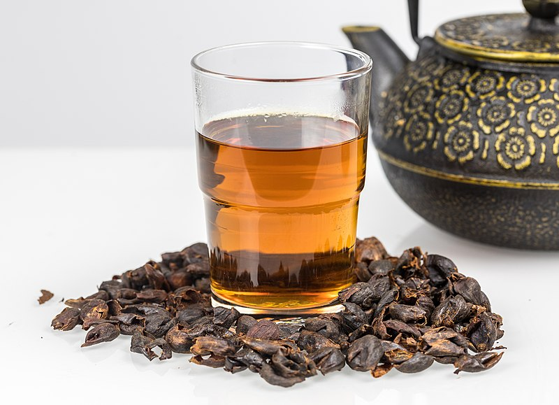

Menu
Beverages
Coffee-Cherry
Coffee cherry tea is an herbal tea made from the dried skins and/or pulp of the fruit of the coffee plant that remain after the coffee beans have been collected from within. It is also known as cascara, from the Spanish cáscara, meaning "husk". It is similar to a traditional beverage in Yemen and Ethiopia.
8$
